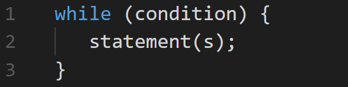
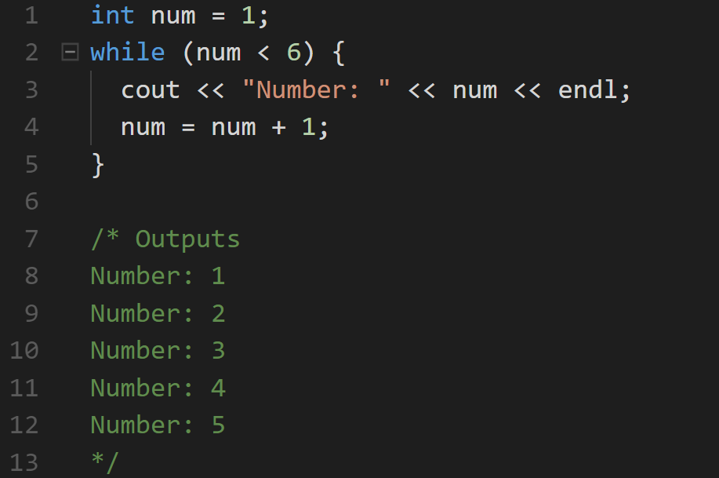
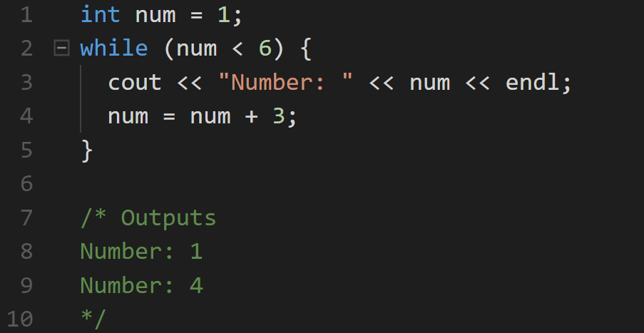

Loops
A loop repeatedly executes a set of statements until a particular condition is satisfied.
A while loop statement repeatedly executes a target statement as long as a given condition remains true.
Syntax:
The loop iterates while the condition is true.
At the point when the condition becomes false, program control is shifted to the line that immediately follows the loop.
The while Loop
The loop's body is the block of statements within curly braces.
For example:
The example above declares a variable equal to 1 (int num = 1).
The while loop checks the condition (num < 6), and executes the statements in its body, which increment the value of num by one each time the loop runs.
After the 5th iteration, num becomes 6, and the condition is evaluated to false, and the loop stops running.
The while Loop
The increment value can be changed. If changed, the number of times the loop is run will change, as well.
Without a statement that eventually evaluates the loop condition to false, the loop will continue indefinitely.